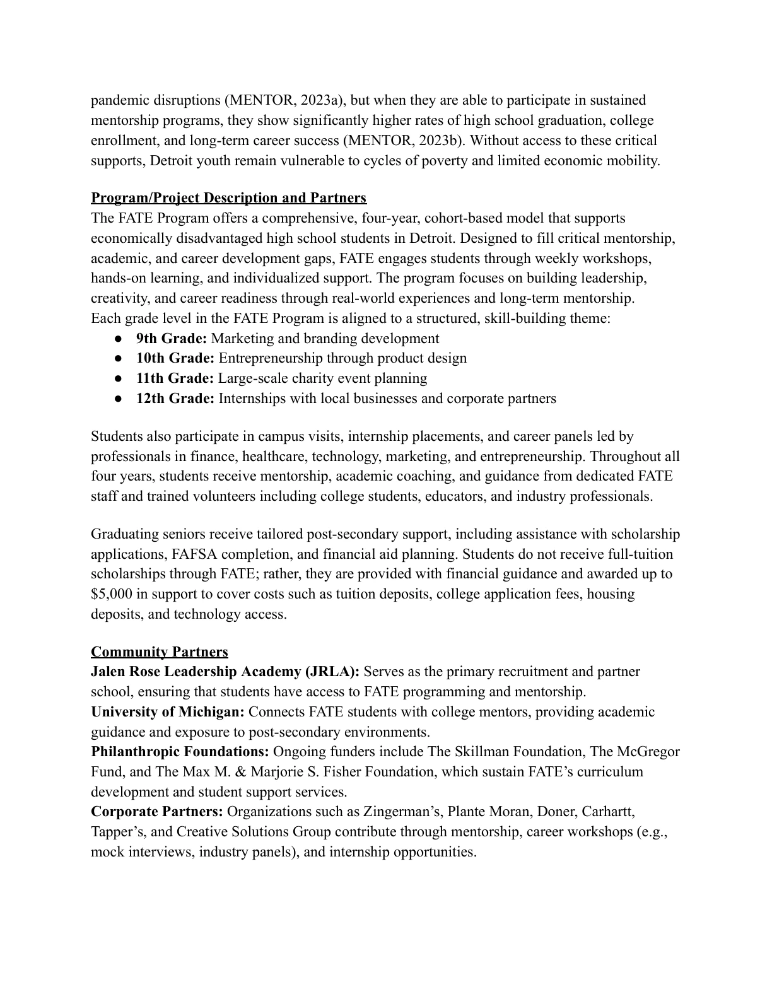
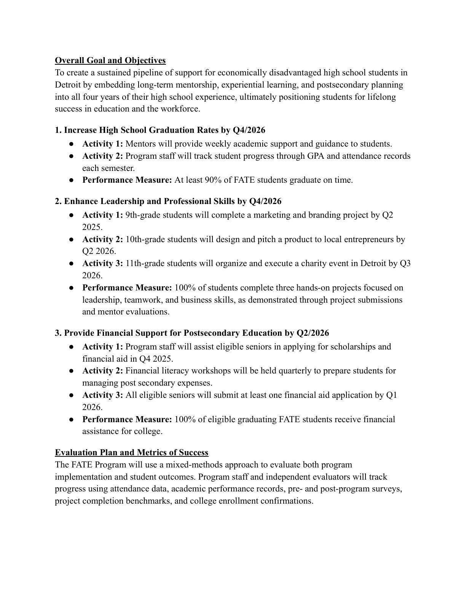
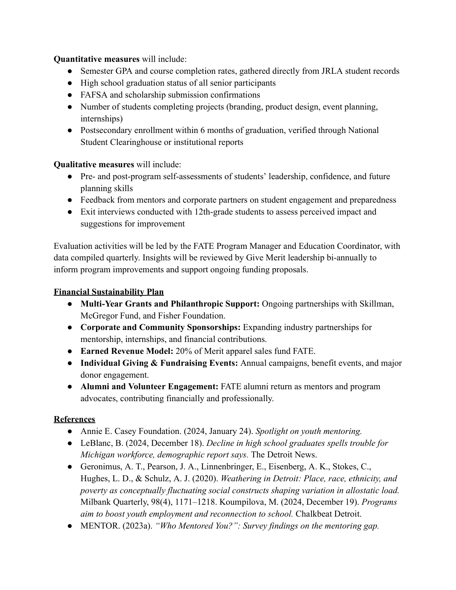

Students
A proposed cohort of 50 Detroit high-school students receiving sustained mentorship and career-readiness support.
The Give Merit FATE project required turning a youth-development mission into a program model a funder could evaluate: who the program would serve, what students would experience over four years, how outcomes would be measured, and how a $250,000 request would support the work.
4 min read · Original project artifacts

Give Merit is a Detroit-based nonprofit focused on mentorship, enrichment, and educational opportunity for young people. Its FATE program uses a sustained, four-year experience to connect high-school students with academic support, career exposure, hands-on projects, and postsecondary planning.
For this academic grant-writing project, I developed a proposal around that program model. The assignment required a clear explanation of the need, the participant experience, the intended outcomes, the funding request, and how success would be evaluated. It was a proposal exercise, not a grant award or a program I personally operated.
I developed the proposal narrative and connected the four-year participant journey with an evaluation framework and a proposed $250,000 request for a 50-student cohort. My work focused on turning a broad social-impact mission into a program description a funder could assess.
That required research synthesis, clear writing, activity sequencing, outcome definition, and attention to who would deliver and evaluate the work. I also considered sustainability beyond a single funding source so the proposal would explain how support could continue over the cohort’s full experience.
A compelling statement of need is not enough to show how a program will work. The proposal needed a traceable connection from the barriers students faced to the support provided, and from that support to evidence of progress.
The four-year structure also required continuity. Activities needed to build on one another, mentors and partners needed defined roles, and the evaluation plan had to measure more than attendance at individual events.
A proposed cohort of 50 Detroit high-school students receiving sustained mentorship and career-readiness support.
Educators, mentors, college volunteers, and business partners responsible for different parts of the experience.
Readers assessing the program’s need, feasibility, intended outcomes, resource request, and sustainability.
I synthesized research about access to mentorship, academic guidance, career exposure, and postsecondary support. Rather than presenting statistics in isolation, the proposal connected those barriers with specific forms of support in the FATE model.
The organization overview then situated the work within Give Merit’s mission and its relationships with schools, mentors, and community partners. This helped explain both why the program mattered and what delivery capacity it could draw on.
The proposal organized the journey around a different focus each year: marketing and branding in ninth grade, product design and entrepreneurship in tenth, charity-event planning in eleventh, and internships in twelfth.
Weekly mentoring, academic coaching, college visits, career panels, and financial-aid support created continuity around those projects. The progression moved from exploration and creative work toward practical experience and postsecondary decisions.
I developed a mixed-methods evaluation approach that combined attendance and academic records with project completion, financial-aid applications, graduation, and postsecondary enrollment. Qualitative measures included self-assessments, mentor feedback, and senior exit interviews.
The proposal assigned evaluation responsibilities and a review cadence so data collection would support program improvement. The intended result was a framework where a funder could see what would be measured, why it mattered, and how the findings could inform decisions.
The proposed request was $250,000 across four years for 50 participants. I also described a broader sustainability approach involving multi-year grants, corporate and community sponsorship, individual giving, fundraising, and alumni engagement.
The financial narrative distinguished the overall program investment from the separate forms of postsecondary assistance discussed in the proposal. This avoided implying that the funding request represented a guaranteed cash scholarship for every student.
The proposal’s structure connected program activities with a reason for doing them and a way to assess progress.
| What mattered | The response | Why it mattered |
|---|---|---|
| Long-term support required more than a sequence of workshops. | Use a four-year cohort journey with continuing mentorship. | Build progression and continuity into the model. |
| Participation alone would not establish meaningful progress. | Track academic, project, financial-aid, and postsecondary indicators. | Evaluate both implementation and intended outcomes. |
| Student experience could not be captured by administrative records alone. | Include self-assessment, mentor feedback, and exit interviews. | Understand confidence, preparedness, and perceived value. |
| A cohort extended beyond a single grant cycle. | Describe several potential sources of continuing support. | Make sustainability part of the program design. |
The proposal excerpts show the program rationale, four-year structure, outcome framework, and evaluation plan. The full final proposal is available below.



The final deliverable was a complete academic proposal: organization and need statements, a four-year program description, a 50-student cohort, a $250,000 funding request, objectives, evaluation measures, and a sustainability plan.
The results of my work were the proposal and the program framework. The graduation, financial-aid, and postsecondary measures in the document are intended targets and proposed evaluation criteria; they are not outcomes I measured from an implemented program.
This work strengthened my ability to explain how a mission becomes an executable program. The strongest parts of the proposal were the connections between activities, responsibilities, resources, and evaluation.
I would bring that discipline to future program work: define the participant journey, make the operating assumptions visible, and decide what evidence will show progress before implementation begins.
{kind=link}
{kind=link}
{kind=link}